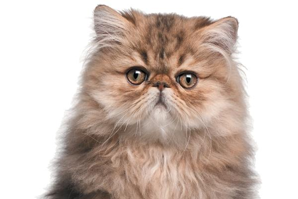
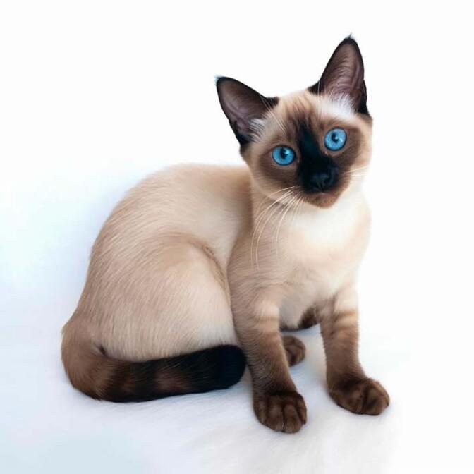
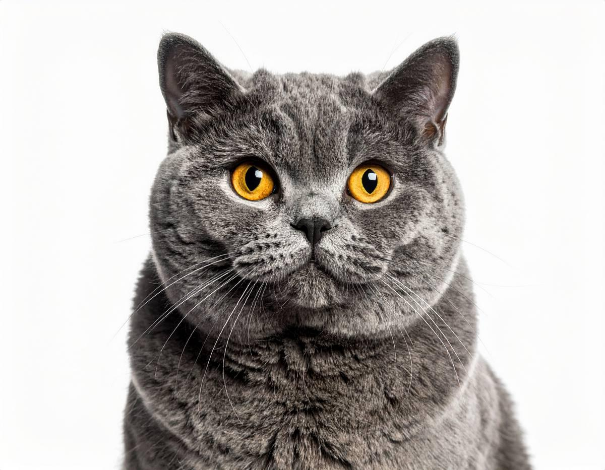
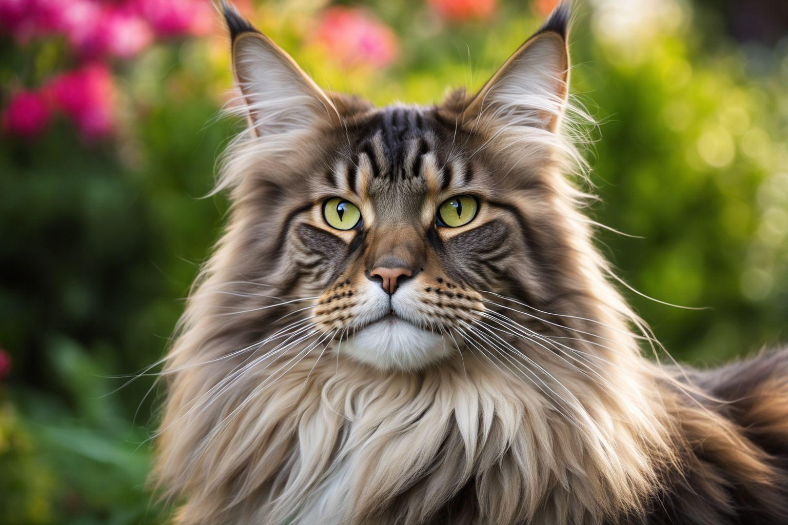
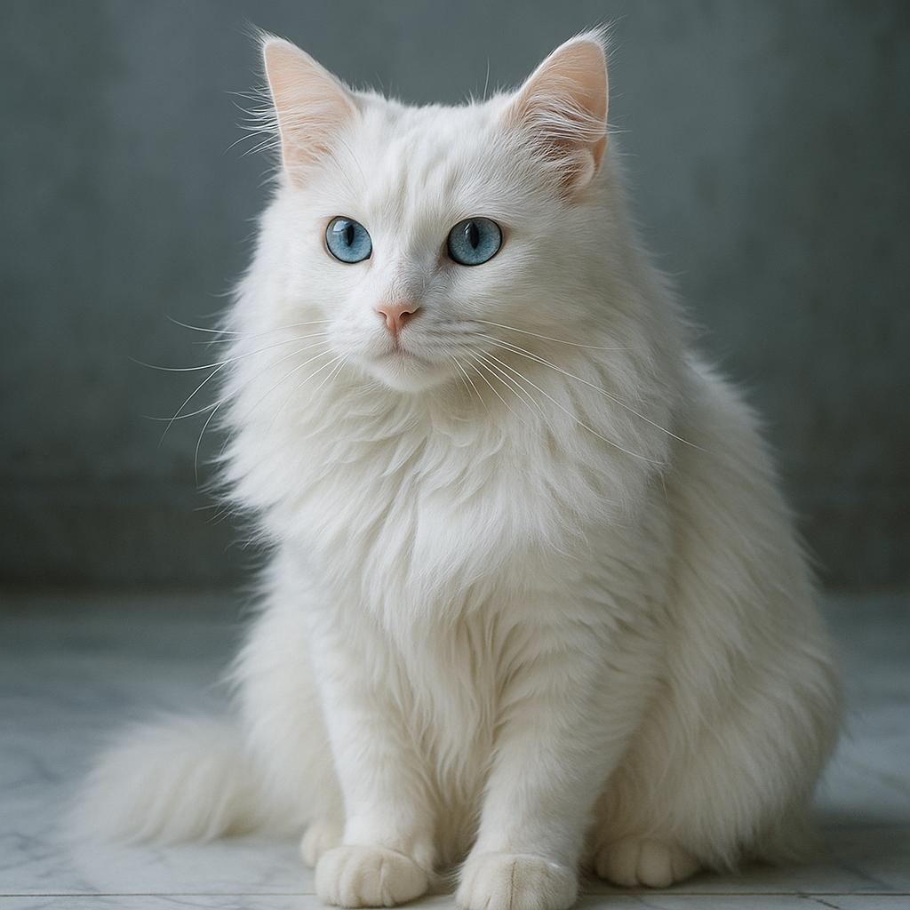
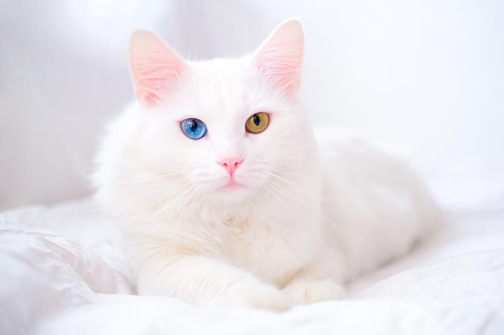
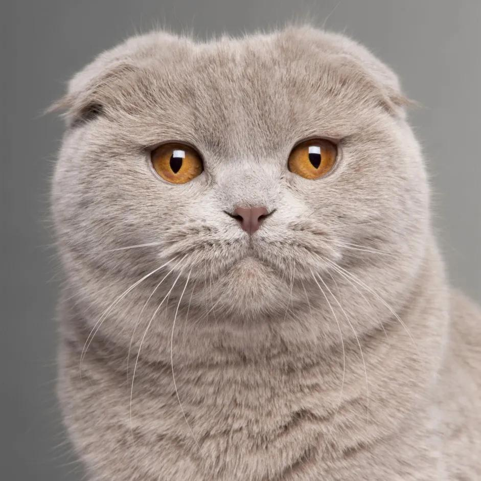
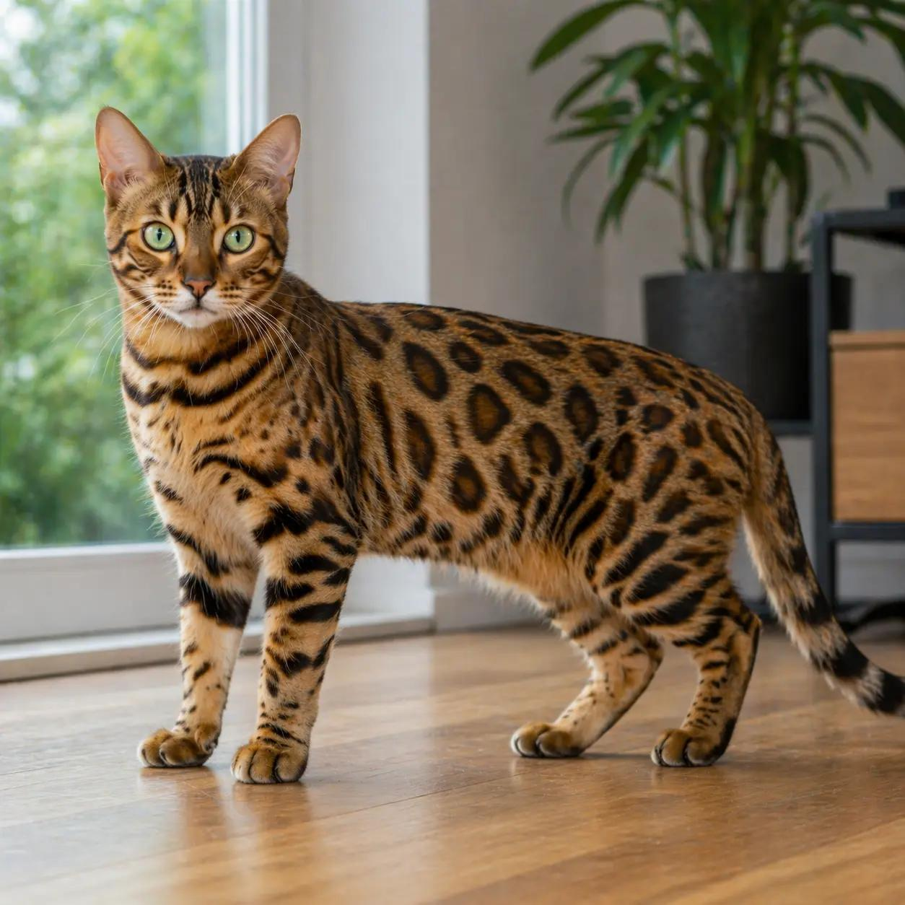
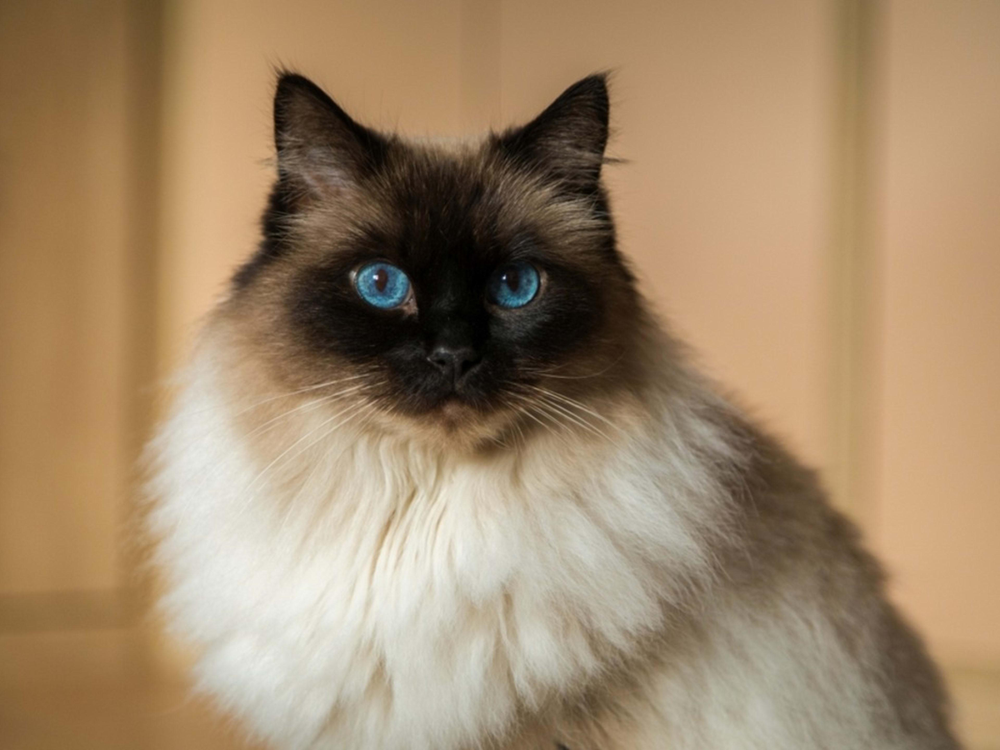
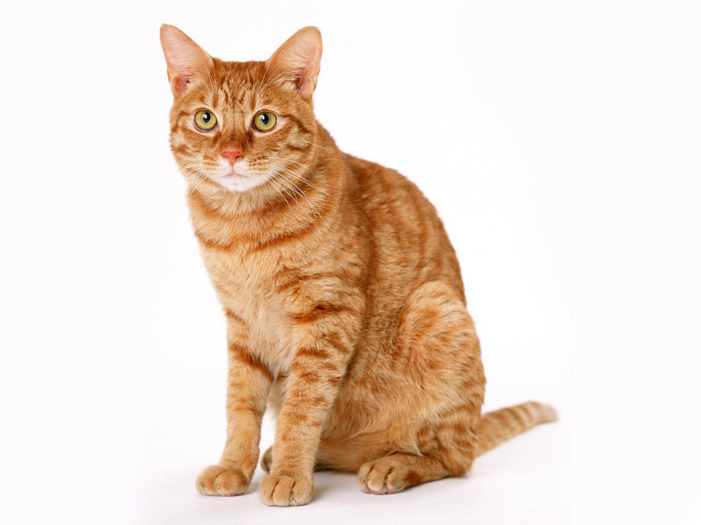

Köpeklerle İlgili Diğer Siteye Git
Kuşlarla İlgili Diğer Siteye Git
Kediler, memeliler sınıfına ait, evcil hayvan olarak sıkça beslenen canlılardır. Çevik vücutları, keskin duyuları ve dengeli hareketleriyle dikkat çekerler. Karanlıkta görme yetenekleri gelişmiştir ve işitme duyuları oldukça hassastır. Kediler genellikle temiz hayvanlardır ve kendilerini yalayarak temizlerler. İnsanlarla bağ kurabilir, oyun oynayabilir ve yaşadıkları ortama uyum sağlayabilirler. Ancak her kedinin karakteri farklıdır; bazıları hareketli ve oyuncuyken bazıları daha sakin olmayı tercih eder. Kedilerin sağlıklı bir yaşam sürmesi için dengeli beslenmeleri, temiz suya ulaşmaları, düzenli veteriner kontrolünden geçmeleri ve güvenli bir ortamda yaşamaları gerekir.
İran kedisi, uzun ve yoğun tüyleri, yuvarlak yüzü ve kısa burnuyla tanınır. Genellikle sakin, sevecen ve huzurlu bir yapıya sahiptir. Çok fazla hareket etmek yerine rahat yerlerde dinlenmeyi tercih edebilir. Uzun tüylerinin karışmaması için düzenli taranması gerekir.

Siyam kedisi, ince ve zarif vücut yapısı, kısa tüyleri ve belirgin renk noktalarıyla bilinir. Sosyal, zeki ve konuşkan bir karaktere sahiptir. İnsanlarla etkileşimde bulunmayı sever ve genellikle sahibine bağlıdır. Enerjik yapısı nedeniyle oyun oynamaktan hoşlanır ve dikkat çekmeyi sever.

British Shorthair, yuvarlak yüzü, dolgun yanakları ve kısa, sık tüyleriyle bilinir. Genellikle sakin, uyumlu ve bağımsız bir karaktere sahiptir. İnsanlarla vakit geçirmeyi sever ancak sürekli ilgi beklemeyebilir. Tüy bakımı, uzun tüylü cinslere göre daha kolaydır.

Maine Coon, evcil kedi cinsleri arasında büyük vücut yapısıyla tanınır. Uzun tüyleri, kabarık kuyruğu ve kulak uçlarındaki tüyleriyle dikkat çeker. Genellikle dost canlısı, zeki ve oyuncudur. Hareket etmeyi ve çevresini keşfetmeyi sever. Uzun tüylerinin düzenli taranması önemlidir.

Ankara kedisi, Türkiye kökenli, zarif ve çevik bir kedi cinsidir. Genellikle beyaz tüyleriyle tanınsa da farklı tüy renklerine sahip bireyleri de vardır. Bazılarının gözleri farklı renklerde olabilir. Zeki, hareketli ve meraklıdır. İnsanlarla iletişim kurmayı sever ve oyunlara ilgi gösterir.

Van kedisi, Türkiye'nin Van yöresiyle özdeşleşmiş bir kedi cinsidir. Çoğunlukla beyaz vücudu, başında ve kuyruğunda bulunan renkli bölgeleriyle tanınır. Mavi, kehribar veya farklı renkte gözlere sahip olabilir. Hareketli, meraklı ve oyuncudur. Suya ilgi duymasıyla da bilinir; ancak her Van kedisi sudan hoşlanmaz.

Scottish Fold, öne doğru kıvrık kulakları ve yuvarlak yüzüyle tanınır. Genellikle sakin ve sevecen bir yapıya sahiptir. Ancak kulaklarının kıvrık olmasına neden olan genetik özellik, kıkırdak ve kemik sorunlarıyla ilişkilidir. Bu nedenle bu cinsin sağlık sorunları açısından dikkatle değerlendirilmesi gerekir.

Bengal kedisi, leoparı andıran benekli veya desenli tüyleriyle dikkat çeker. Atletik, enerjik ve meraklı bir yapıya sahiptir. Tırmanmayı, keşfetmeyi ve oyun oynamayı sever. Enerjisini atabilmesi için hareket edebileceği güvenli bir alana ve zihinsel etkinliklere ihtiyaç duyar.

Ragdoll, mavi gözleri, uzun tüyleri ve yumuşak görünümlü kürküyle bilinir. Genellikle sakin, sevecen ve insanlarla vakit geçirmekten hoşlanan bir cinstir. Ev ortamına uyum sağlayabilir. Tüylerinin düzenli taranması ve sağlığının takip edilmesi gerekir.

Sarman kedi, Türkiye kökenli, zarif ve çevik bir kedi cinsidir. Genellikle beyaz ve turuncu tüyleriyle tanınır. Zeki, hareketli ve meraklıdır. İnsanlarla iletişim kurmayı sever ve oyunlara ilgi gösterir.

Kedilerin sağlıklı büyüyebilmesi için yaşlarına ve sağlık durumlarına uygun, dengeli bir kedi mamasıyla beslenmeleri gerekir. Her zaman temiz içme suyuna ulaşabilmelidirler. Kum kaplarının düzenli temizlenmesi, tüylerinin ihtiyaçlarına göre taranması ve veteriner kontrollerinin aksatılmaması önemlidir. Kediler oyun oynamayı ve çevrelerini keşfetmeyi sever; bu nedenle evde güvenli oyuncaklar ve dinlenebilecekleri alanlar bulunmalıdır. Ayrıca çikolata, soğan, sarımsak ve bazı insan yiyecekleri kediler için zararlı olabilir.
Kediler, farklı görünümleri, karakterleri ve ihtiyaçlarıyla birbirinden ayrılan canlılardır. İran kedisi ve Ragdoll gibi cinsler genellikle sakin yapılarıyla, Bengal ve Siyam kedileri ise hareketli ve meraklı özellikleriyle bilinir. Ankara ve Van kedileri de Türkiye'nin önemli kedi türleri arasında yer alır. Bir kedi sahiplenirken yalnızca görünüşüne değil, sağlık durumuna, karakterine ve bakım ihtiyaçlarına da dikkat edilmelidir. Unutulmamalıdır ki her kedi, cinsi ne olursa olsun sevgiye, ilgiye ve güvenli bir yaşam alanına ihtiyaç duyar.